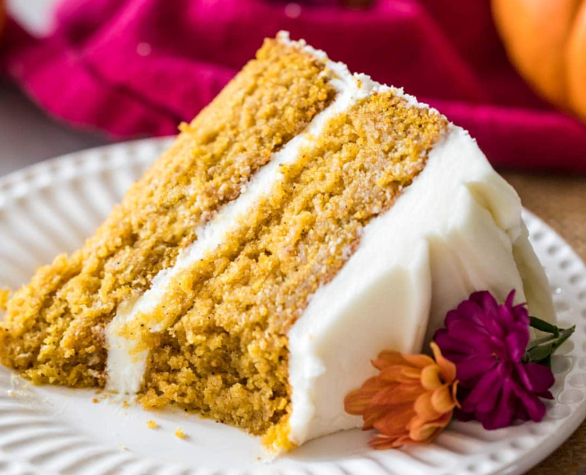

Pumpkin cake

Description
My soft, spiced, melt-in-your-mouth pumpkin cake recipe takes just 20 minutes to prep before baking. Top it with a simple cream cheese frosting, and you’ve got yourself a seasonal showstopper!
Ingredients
- 1 cup unsalted butter softened to room temperature (226g)
- 1 cup granulated sugar (200g)
- ½ cup light brown sugar firmly packed (100g)
- ½ cup canola oil or vegetable oil (120ml)
- 2 cups pumpkin puree* (488g)
- 4 large eggs room temperature preferred
- 1 Tablespoon vanilla extract
- ¼ cup milk (60ml)
- 2 ½ cups flour (310g)
- 1 ½ teaspoons baking powder
- 1 teaspoon baking soda
- 1 teaspoon salt
- 4 teaspoons pumpkin spice
- 1 teaspoon cinnamon
Cream Cheese Frosting
- 8 oz cream cheese softened (225g)
- ½ cup unsalted butter softened (113g)
- 1 vanilla bean, scraped or 1 teaspoon vanilla extract
- ⅛ teaspoon salt
- 3 ½ cups powdered sugar (435g)
Instructions
- Preheat oven to 350F (175C) and prepare 2 8″ cake pans by lightly greasing and flouring the sides and lining the bottom with parchment paper.
Set aside.
- Combine butter and sugars in the bowl of a stand mixer (or in a large bowl and use an electric mixer). Beat until well-combined and light and fluffy.
- Add oil and beat to combine.
- Stir in pumpkin.
- Add eggs one at a time, stirring well after each addition.
- Stir in milk and vanilla extract. Scrape down the sides and bottom of the bowl to ensure ingredients are evenly combined.
- In a separate, medium-sized bowl, whisk together dry ingredients (flour, baking powder, baking soda, salt, pumpkin spice, and cinnamon).
- Gradually add dry ingredients to wet, stirring until completely combined (be sure to scrape down the sides and bottom of the bowl). I prefer to do this with a spatula to avoid over-mixing the batter.
- Divide batter evenly into prepared cake pans and bake on 350F (175C) for 40-45 minutes, or until centers spring back to the touch and a toothpick inserted in the center comes out with few moist crumbs or clean.
- Allow cakes to cool for 10 minutes and then invert onto cooling rack and allow to cool completely before frosting.
Cream Cheese Frosting
- In a large bowl, combine butter, cream cheese, vanilla extract and salt and beat until smooth, creamy, and well-combined.
- Gradually add powdered sugar to mixture until well-combined, smooth, and light.
- Once cakes have cooled, ice/assemble cakes by first leveling the cakes (I linked th the leveler I used in the "equipment" section above), generously icing between layers, applying an even layer on the top of the cake, and then applying a scant, semi-naked layer around the outside of the cake.
Back to home